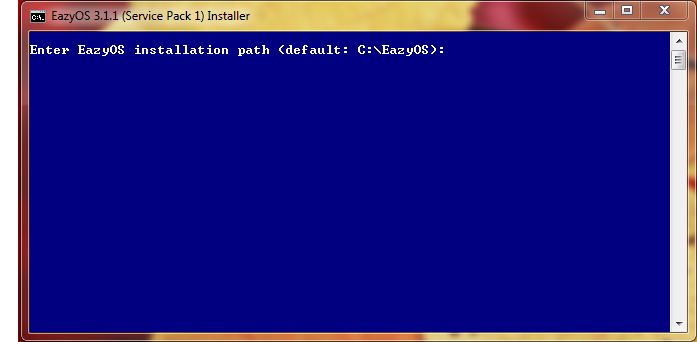
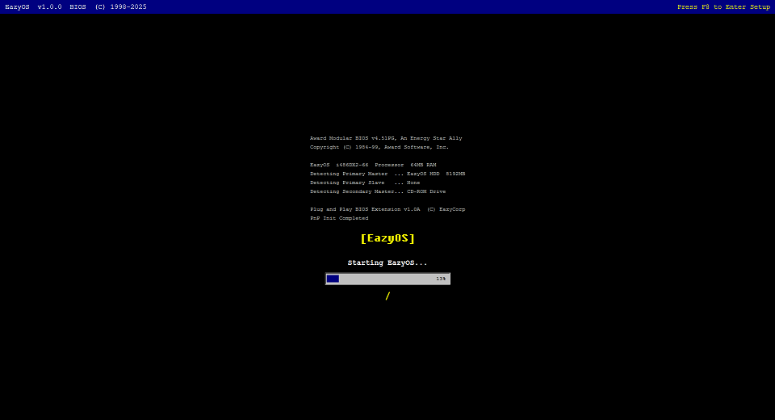
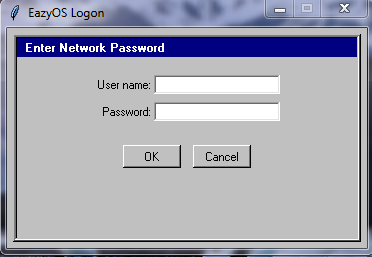

EazyOS Guide
The Offical EazyOS Guide
Download & Start The Setup
To install EazyOS, you need to download the setup which can be accessed on the offical EazyOS website or download it directly from this link.
To run setup, go to your file explorer and navigate to your downloads folders, then, double click "setup3.1.1.bat".
Going Throught The Installer
Once you are in the installer you should see a simular application to the image below.

To continue, press enter to install EazyOS the the default path (reccomended) or set a custom path (advanced).
Then, Select "Install (Fresh Install)" to install EazyOS, or select "Upgrade (Keep User Data)" to upgrade and keep your files.
If you are freshly installing EazyOS, setup will ask for a username and password, enter your desired username and password for EazyOS.
Next, Wait for EazyOS to download (this might take a while depending on your internet speed & connection).
After the first half of setup is finished the second half of setup will install other needed programs.
Loging into EazyOS
Once the installer is finished you should see the image below.

Then, once eazyos prompts you to login, enter you username and password you set during setup.

Customizing EazyOS
To customize EazyOS open the control panel on the desktop after you log in.

To change the background color click on "Display", then under "Desktop Background" click the "Choose" buttion and select a color.
To change the background image click on "Display", then under the "Wallpaper" section select a default background or click on the "Browse..." buttion and then, click on the "Set Wallpaper" buttion.
To change the titlebar color click on "Display", then under the "Window Title Bar" section and click on the "Choose..." buttion and select a color. It is a simalar prosses to change the taskbar color.
Changing The Username and Password
Open the start menu and select "Add Username and Password"
Then enter a new username and password
Always Remember To...
- Update EazyOS Frequently.
- Not Ignore The EazyOS Out OF Support Message
- Make Sure to Please Report Any Bugs.